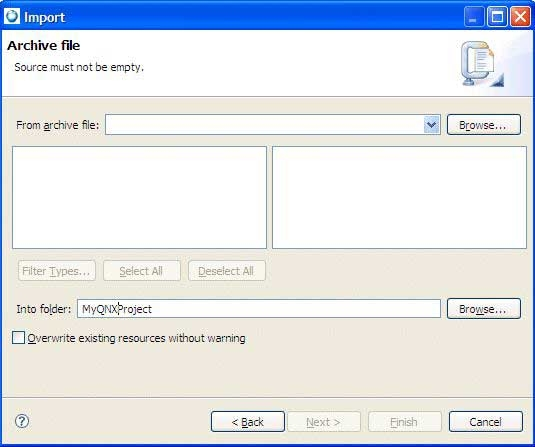

To copy files and folders from a ZIP archive into an existing project in your workspace:
- In the Import wizard (), expand General, choose Archive
File, and then click Next.
The IDE shows
the Archive File panel.

- Enter the full path to the ZIP archive in the From zip file
field, or click the Browse… button to select a ZIP
archive.
- Use the Filter Types…, Select
All, and Deselect All buttons to control
which files are imported.
Click a directory on the left panel to see a list of
files in the right panel.
The Select Types dialog lets you filter
imported files by selecting one or more extensions.
- Enter the name of a project or folder in the Into folder
field, or click the Browse… button to select one.
Note: This project or folder must already exist before you open the Import wizard.
- To overwrite existing files, check the Overwrite existing resources
without warning box.
- To import only the selected folders, check Create selected folders
only.
To import the selected folder and all subfolders, check
Create complete folder structure.
- Click Finish to import the selected resources.